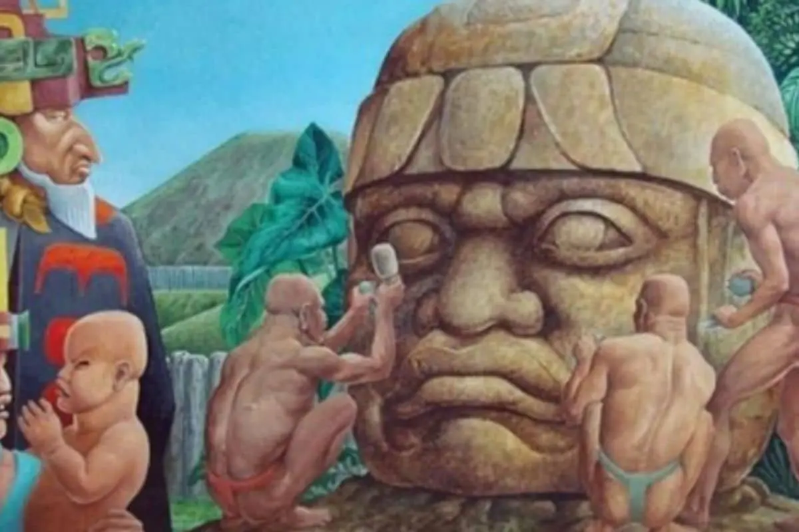
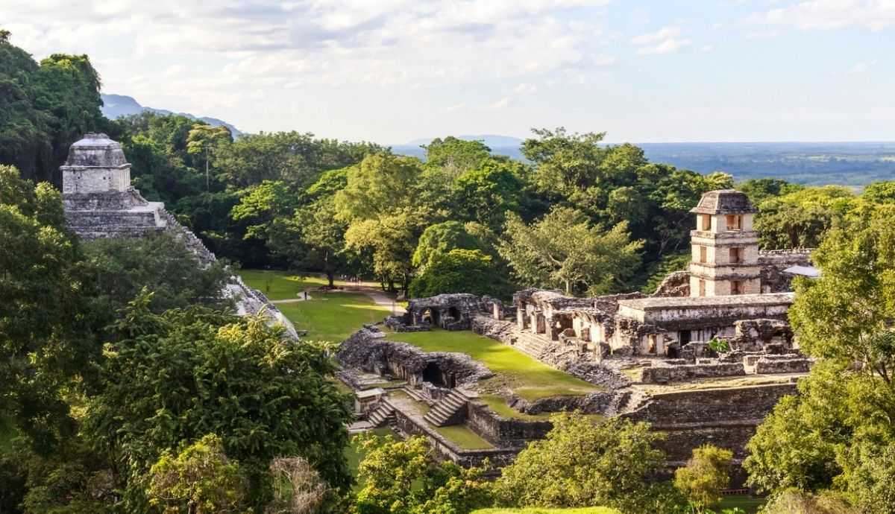
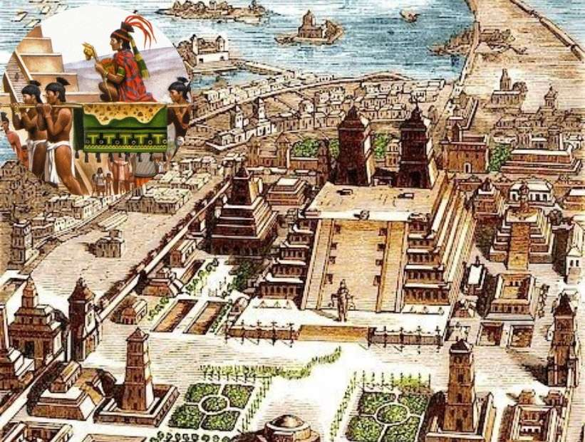

Explora las Civilizaciones
Haz clic en cada civilización para conocer su historia y cultura.

Olmecas
Periodo: 1500 a.C. - 400 a.C.
Región: Veracruz y Tabasco
Capital: San Lorenzo / La Venta
Lengua: Mixe-zoque
Descripción: Considerados la cultura madre de Mesoamérica, famosos por sus cabezas colosales y avanzada organización social.
Ver dioses

Mayas
Periodo: 2000 a.C. - 1500 d.C.
Región: Yucatán, Chiapas, Guatemala, Belice, Honduras
Capital: Tikal / Palenque
Lengua: Maya
Descripción: Destacados por su astronomía, escritura jeroglífica y arquitectura monumental.
Ver dioses

Mexicas
Periodo: 1300 - 1521 d.C.
Región: Valle de México
Capital: Tenochtitlán
Lengua: Náhuatl
Descripción: Fundadores de Tenochtitlán, con un complejo panteón de dioses y guerreros.
Ver dioses